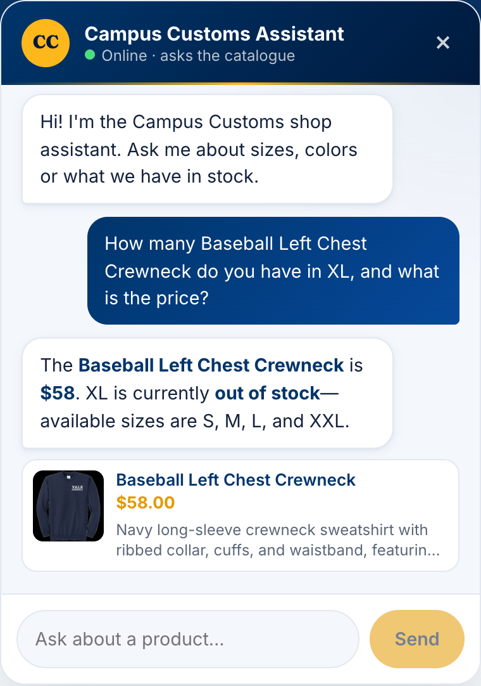
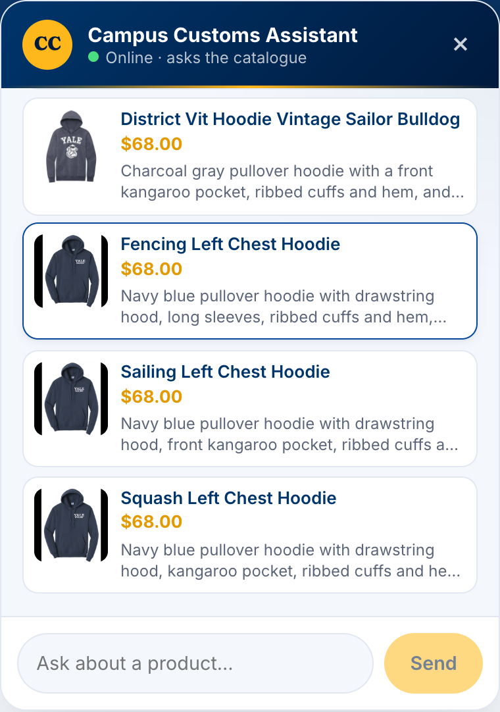
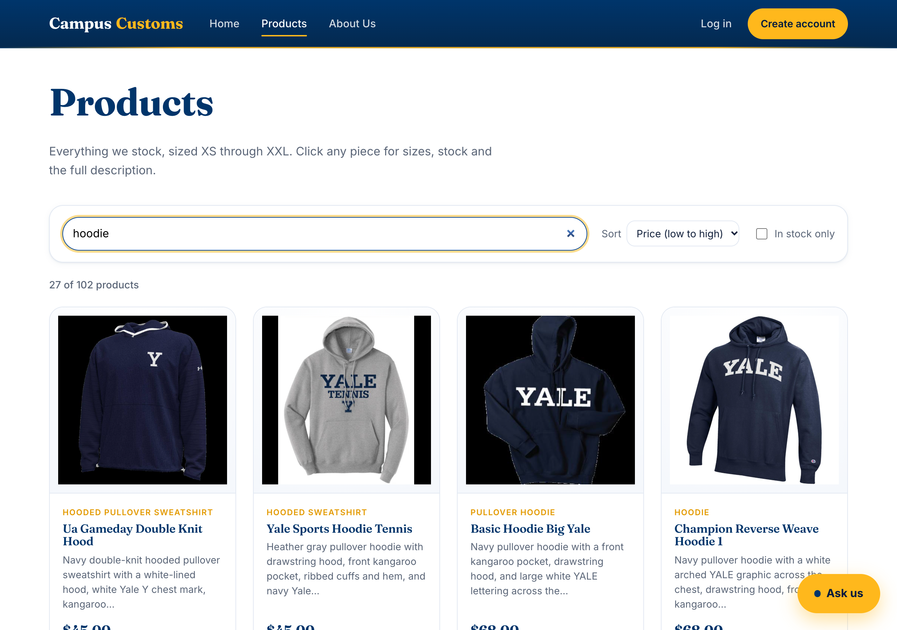
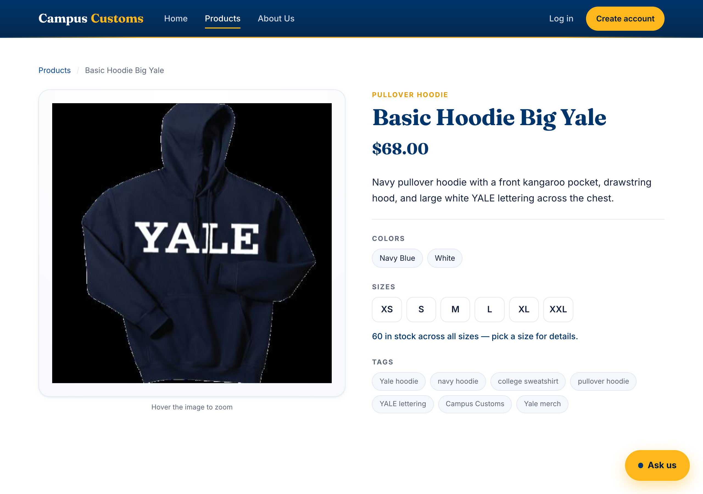

Chat checks a specific item’s stock and price

Asked “how many Baseball Left Chest Crewneck in XL, and the price?”, the assistant answers $58, says XL is out of stock, and lists the sizes that are available (S, M, L, XXL). This matches the database exactly (that product has XL at quantity 0), proving the agent reads real stock and price rather than inventing them.
Category question renders product cards on the page

Tapping the “What hoodies do you have?” quick-reply makes the agent search the catalogue, and the website renders the matches as product cards — image, name, price and short description — right in the chat. This shows the agent → front-end contract working: structured matches from the search become cards, and each card links to that product’s page.
Products page: live search, sort, and stock filter

Typing “hoodie” narrows the catalogue to 27 of 102 products instantly, and the Sort → Price (low to high) control orders them ($45 first). An “In stock only” toggle is also available. This is the usability improvement from Problem 9 — with 100+ items, a shopper can find exactly what they want without endless scrolling.
Single-item page with hover-zoom and clear price/stock

The redesigned detail page: large product image (“Hover the image to zoom”), Yale-navy/gold palette with a Fraunces display font, clear $68 price, colour chips, selectable size buttons, and a live stock line (“60 in stock across all sizes”). Shown as supporting evidence of the Problem 10 storefront redesign and premium single-item presentation.